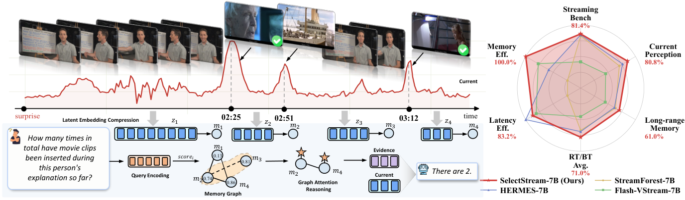
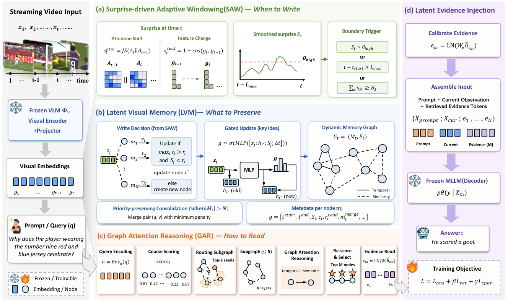
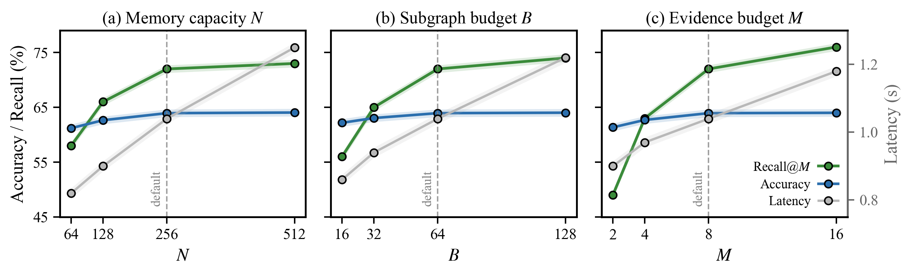
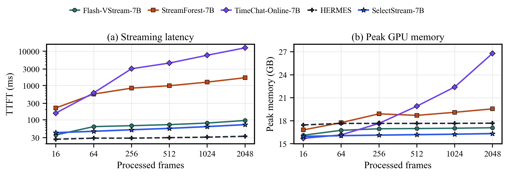

Abstract
Streaming video understanding models must answer queries at any moment during an ongoing stream, using only what they have observed so far and under fixed memory and computation budgets. Existing methods address this by adding memory banks, retrieval modules, or visual token compression to preserve long-range history. However, strong recent-window baselines show that indiscriminate history injection can dilute current-scene perception, suggesting that the key challenge is not whether to use memory, but how to allocate it selectively. We formulate this as budgeted online latent evidence allocation and propose SelectStream, a selective latent-memory framework that keeps the current observation directly visible to a frozen VLM while exposing historical information only through a compact, query-conditioned evidence budget. Three coordinated mechanisms govern when to write, what to preserve, and how to retrieve: surprise-driven adaptive windowing, priority-preserving consolidation, and query-conditioned graph reasoning over a fixed-capacity latent memory graph. Retrieved evidence is calibrated and injected as latent tokens for answer generation, without replaying frames or growing the context with stream length. Experimental results show that SelectStream achieves strong online streaming performance and preserves general video understanding, reaching 82.67% on StreamingBench, 67.03% on OVO-Bench, and 74.4% average accuracy on offline video benchmarks, while outperforming strong recent-window baselines and prior streaming memory methods.
Method

Surprise-driven Adaptive Windowing
Surprise combines attention shift and feature change. A segment closes on a surprise spike, accumulated surprise energy, or the maximum length — coarse entries for stable intervals, finer ones near transitions.
Latent Visual Memory
Segments are encoded and written into a fixed-capacity memory graph with gated updates. When the budget N is exceeded, priority-preserving consolidation merges the pair with the smallest graph-aware penalty, protecting surprising, frequently read, and recent evidence.
Graph Attention Reasoning
The query scores active nodes, routes through temporal and semantic neighborhoods within a subgraph budget B, and refines them with relational graph attention before selecting the top-M nodes.
Latent Evidence Injection
Only M calibrated evidence tokens join the prompt and current observation. There is no frame replay or text summary, and the context does not grow with stream length.
Results
| Model | #Frames | StreamingBench | OVO RT Avg. | OVO BT Avg. | OVO RT/BT Avg. | OVO Overall |
|---|---|---|---|---|---|---|
| Offline video LLMs | ||||||
| Qwen2.5-VL-7B | 1 fps | 73.31 | 59.90 | 44.70 | 52.28 | – |
| LLaVA-OneVision-7B | 32 | 71.12 | 64.00 | 43.70 | 53.85 | 52.74 |
| Online / streaming video LLMs | ||||||
| Flash-VStream-7B | 1 fps | 23.23 | 28.40 | 27.40 | 27.90 | 33.61 |
| StreamForest-7B | 1 fps | 77.26 | 61.20 | 52.00 | 56.60 | – |
| Streamo-7B | 2 fps | – | 67.44 | 49.18 | 58.31 | 57.86 |
| HERMES-7B | 1 fps | 79.44 | 69.00 | 49.40 | 59.20 | – |
| ThinkStream-7B | 1 fps | 75.00 | 69.12 | 60.68 | 64.90 | – |
| Qwen2.5-VL-7B + 4f (recent window) | 1 fps | 78.47 | 78.40 | 51.90 | 65.13 | – |
| Qwen3-VL-8B + 4f (recent window) | 1 fps | 80.59 | 81.40 | 54.00 | 67.70 | – |
| SelectStream-Qwen2.5-VL-7B | 1 fps | 81.42 | 80.85 | 61.05 | 70.95 | 65.71 |
| SelectStream-Qwen3-VL-8B | 1 fps | 82.67 | 82.76 | 62.20 | 72.48 | 67.03 |
Online streaming benchmarks (subset of Table 1). RT: Real-Time Visual Perception; BT: Backward Tracing. The largest gains appear on Backward Tracing, which directly tests the use of prior visual context, while current-scene perception is retained.
| Model | #Frames | VideoMME | MLVU | MVBench | Avg. |
|---|---|---|---|---|---|
| LLaVA-Video-7B | 64 | 63.3 | 70.8 | 58.6 | 64.2 |
| StreamForest-7B | 1 fps | 61.4 | 70.0 | 70.2 | 67.2 |
| Qwen2.5-VL-7B | max 768 | 65.1 | 70.2 | 69.6 | 68.3 |
| Qwen3-VL-8B | 2 fps, max 2048 | 71.4 | 78.1 | 68.7 | 72.7 |
| SelectStream-Qwen2.5-VL-7B | 1 fps, max 1024 | 67.8 | 73.0 | 70.4 | 70.4 |
| SelectStream-Qwen3-VL-8B | 1 fps, max 1024 | 73.2 | 80.0 | 69.9 | 74.4 |
Offline video generalization (subset of Table 2), evaluated with a causal final-query protocol. SelectStream preserves the backbone's general video understanding while adding long-range evidence.
| Variant (SelectStream-Qwen2.5-VL-7B) | StreamingBench | OVO-Bench | MLVU |
|---|---|---|---|
| Memory allocation | |||
| Fixed segments w/o SAW | 79.86 | 64.21 | 71.2 |
| w/o gated writing | 80.21 | 64.48 | 71.7 |
| FIFO consolidation | 79.42 | 63.61 | 70.4 |
| Similarity-only merging | 80.03 | 64.03 | 71.0 |
| Evidence readout | |||
| Top-k retrieval w/o GAR | 79.71 | 63.92 | 71.1 |
| Fixed-hop expansion | 80.09 | 64.28 | 71.6 |
| w/o evidence calibration | 78.96 | 63.08 | 70.2 |
| w/o Lret | 80.27 | 64.42 | 71.8 |
| w/o Lspar | 80.76 | 64.82 | 72.3 |
| Full SelectStream | 81.42 | 65.71 | 73.0 |
Ablations (Tables 3 and 4) under the same node and evidence budgets. Every write, consolidation and readout component contributes; removing evidence calibration causes the largest drop.
Budgets and Efficiency


BibTeX
@inproceedings{ge2026selectstream,
title = {What Should a Streaming Video Model Remember?},
author = {Ge, Haonan and Wang, Yiwei and Wu, Hang and Cai, Yujun},
booktitle = {Advances in Neural Information Processing Systems},
year = {2026}
}